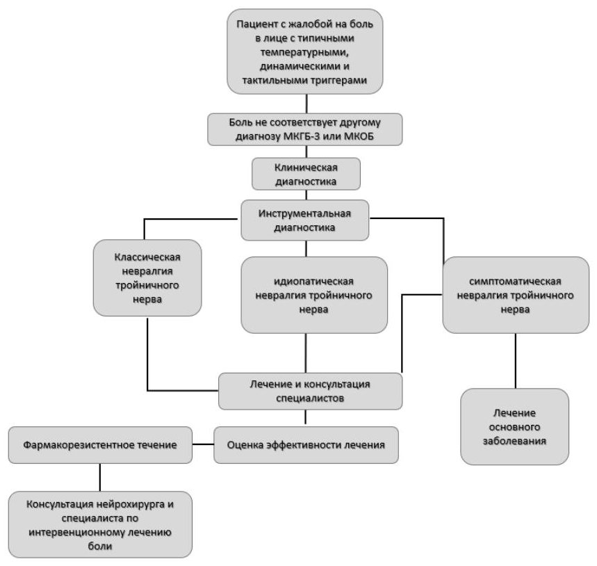
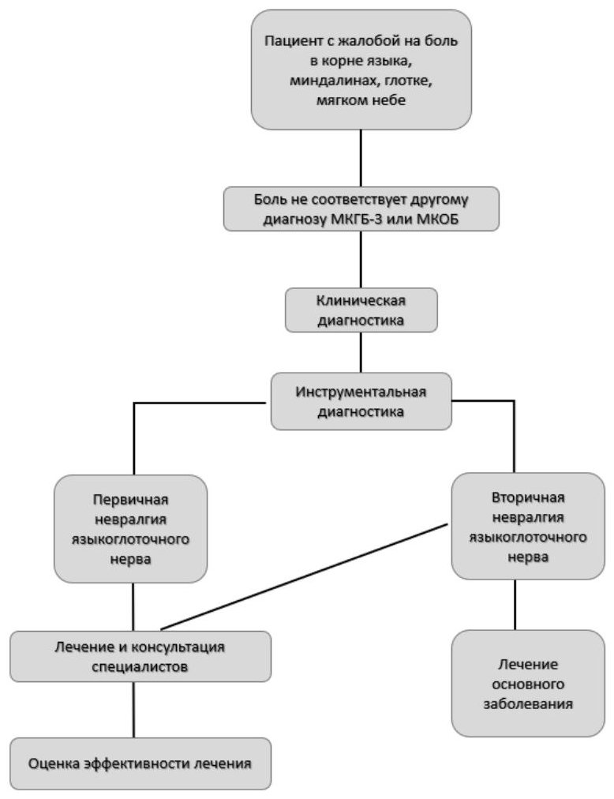
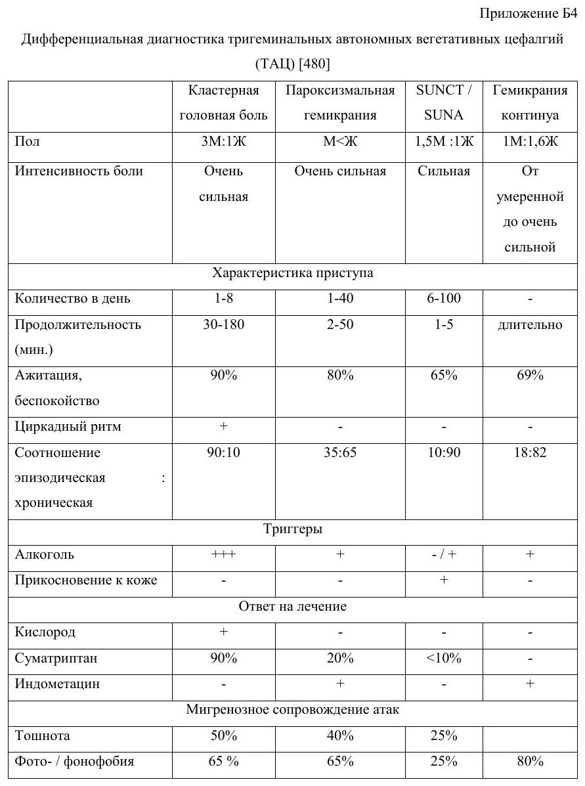
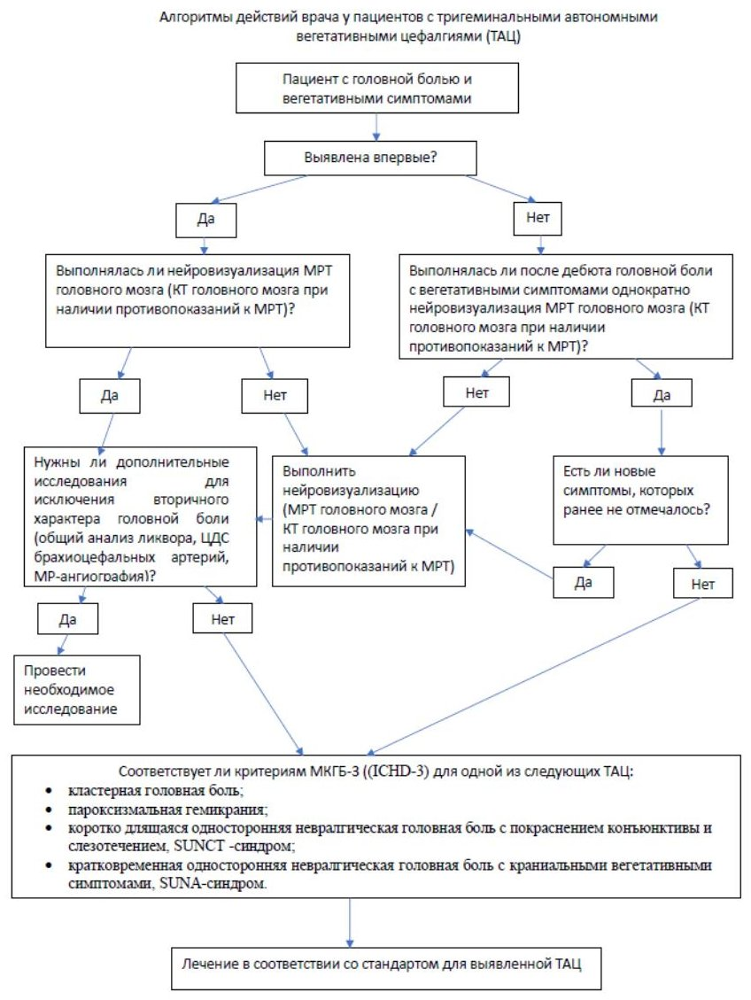
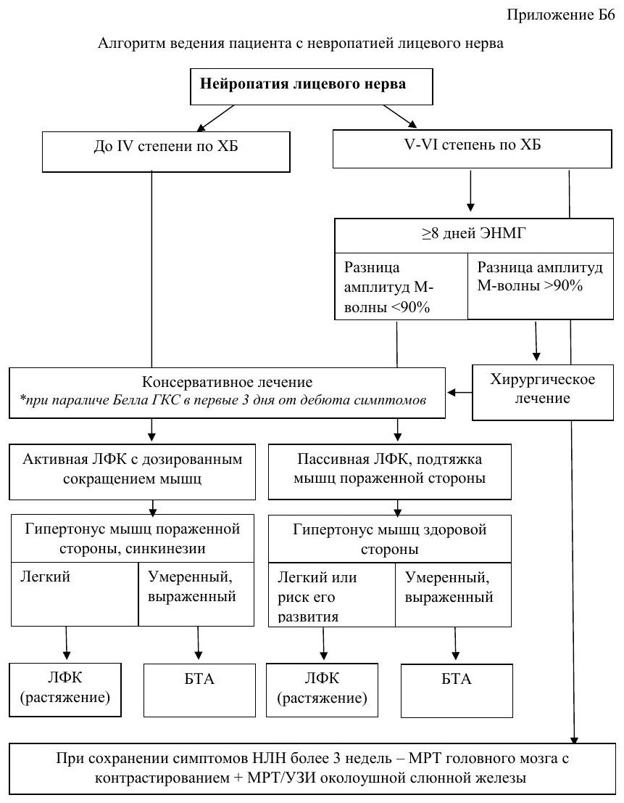
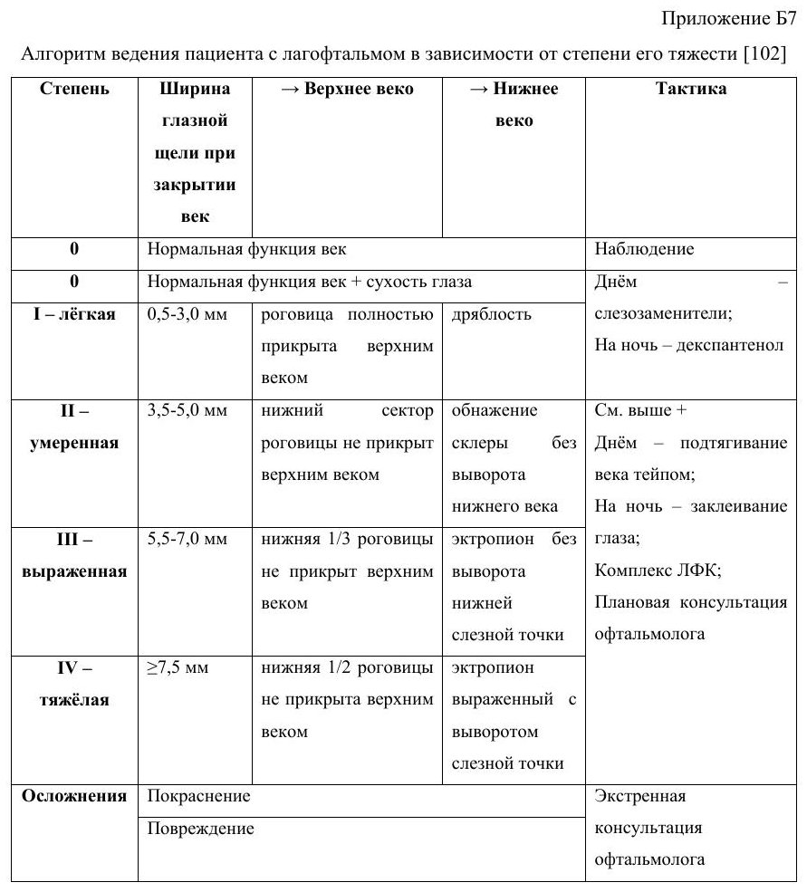
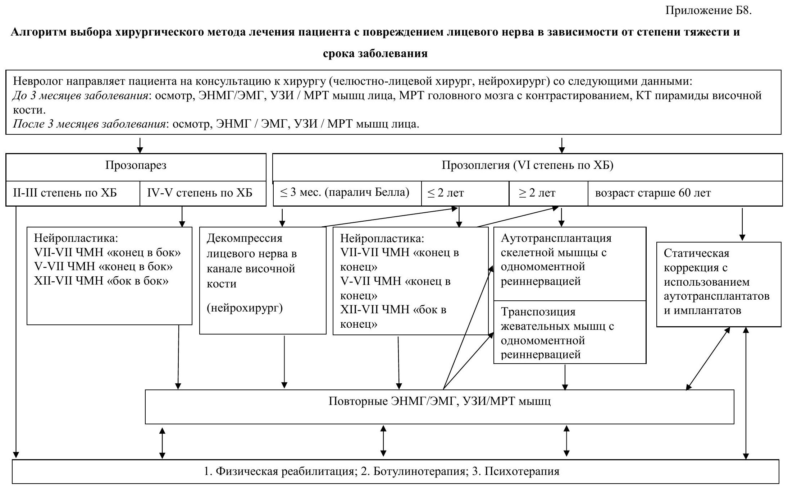
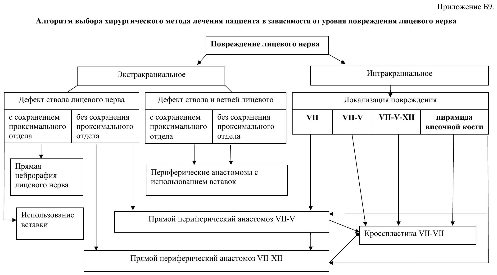
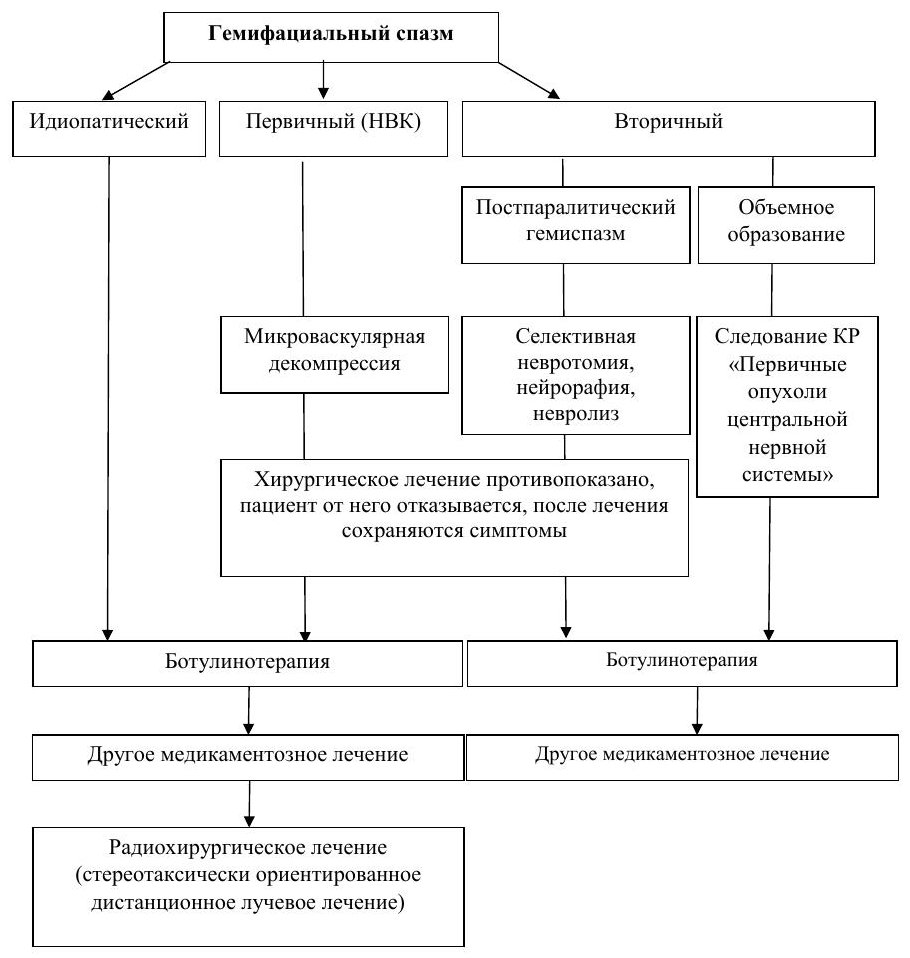

Сверка с PDF рубрикатора выполняется…
Краниальные мононейропатии у взрослых
Клинические рекомендации от 26.12.2024 · взрослые
Основные положения
- Рекомендация охватывает поражения тройничного нерва (невралгия, атипичная лицевая боль, нейропатическая боль, автономные цефалгии), лицевого нерва (нейропатия, гемифациальный спазм, миокимия) и других черепных нервов.
- Паралич Белла является диагнозом исключения и развивается за 24–48 часов, максимум за 72 часа. Глюкокортикоиды назначают как можно раньше, лучше в первые 72 часа, при любой тяжести; при тяжёлой форме к ним добавляют противовирусные средства.
- При нейропатии лицевого нерва всем пациентам показан осмотр оториноларинголога с отоскопией, по показаниям — аудиометрия и тимпанометрия. Снижение слуха на стороне поражения для неё нехарактерно; при его наличии следует заподозрить объёмное образование.
- При «красных флагах» или сохранении симптомов более 3 недель выполняют МРТ головного мозга с контрастом.
- При тяжёлой нейропатии (V–VI степень) ЭНМГ выполняют не ранее 8 суток; снижение М-ответа на 90% и более служит основанием для направления к хирургу. Электростимуляция и форсированные упражнения не рекомендуются.
- Экстренная госпитализация при нейропатии лицевого нерва показана в первые 72 часа для внутривенного введения метилпреднизолонаoff-label в высокой дозе, а также при других неврологических симптомах, нарастании тяжести с нарушением сознания, лихорадкой, менингеальными симптомами, декомпенсации артериального давления или сахарного диабета, при беременности.
- При тригеминальной невралгии препаратами первой линии являются карбамазепин и окскарбазепин.
- Невралгия языкоглоточного нерва проявляется приступами боли по типу удара тока в задней части языка, миндалине, глотке, у угла челюсти, в ухе; обследование включает МРТ, УЗИ шеи и видеоларингоскопию.
Клиническая картина и классификация
Тройничный нерв: определения
Тригеминальная невралгия — односторонние повторяющиеся кратковременные приступы боли по типу удара током, внезапно начинающиеся и прекращающиеся, провоцируемые безболевыми раздражителями, в зоне одной или нескольких ветвей тройничного нерва. Может сопровождаться постоянной фоновой болью умеренной интенсивности.
Атипичная лицевая боль и нейропатическая боль раздел 1.1 КР
| Состояние | Определение |
|---|---|
| Персистирующая идиопатическая лицевая боль | постоянная боль в лице, ежедневно более 2 часов в день более 3 месяцев, без выраженных неврологических нарушений и предшествующей причины |
| Миофасциальная орофациальная боль, связанная с мышечным спазмом | боль от внезапного непроизвольного обратимого тонического сокращения жевательной мышцы; возможно острое нарушение прикуса |
| Синдром пылающего рта | жжение или дизестезия в полости рта ежедневно более 2 часов в день более 3 месяцев без признаков основного заболевания |
| Тригеминальная нейропатическая боль | боль в зоне одной или нескольких ветвей тройничного нерва, вызванная другим заболеванием и указывающая на повреждение нерва |
- кластерная головная боль — короткие односторонние атаки крайне сильной боли в области орбиты, подглазничной или височной области с вегетативными симптомами со стороны глаза и носа
- пароксизмальная гемикрания — строго односторонняя боль в области орбиты, подглазничной или височной области по 2–30 минут, много раз в день, с вегетативными симптомами; купируется индометацином
- SUNCT — короткие односторонние атаки боли в глазничной и окологлазничной области, всегда с инъекцией конъюнктивы и слезотечением
- SUNA — то же, но инъекции конъюнктивы и слезотечения нет или есть только один из этих симптомов
- гемикрания континуа — непрерывная односторонняя головная боль умеренной интенсивности с обострениями и вегетативными симптомами, абсолютный эффект индометацина
Лицевой нерв: определения
Нейропатия лицевого нерва — асимметрия лица из-за односторонней слабости мимических мышц (прозопарез — движения есть, прозоплегия — нет) с неполным закрытием глаза; симптомы по уровню поражения и поздние осложнения — ниже. Паралич Белла — идиопатическая форма.
Гемифациальный спазм — хронические пароксизмальные безболезненные непроизвольные односторонние тонические или клонические сокращения мышц лица, в том числе в покое и ночью.
Лицевая миокимия — спонтанные односторонние низкоамплитудные пульсирующие подёргивания одной мышцы лица (чаще нижней порции круговой мышцы глаза), от секунд до часов, реже до недель; заметнее пациенту, чем окружающим.
Краниальная невропатия — любое повреждение черепного нерва на любом уровне.
- мосто-мозжечковый угол;
- внутренний слуховой проход;
- костный канал до отхождения большого каменистого нерва;
- костный канал до отхождения стремянного нерва;
- выход через шилососцевидное отверстие;
- околоушная железа;
- отдельные ветви в мимических мышцах.
Причины
- Классическая обусловлена нейроваскулярным конфликтом: корешок сдавливает сосуд, чаще верхняя мозжечковая артерия
- Симптоматическая возникает при опухоли, артериовенозной мальформации или демиелинизации при рассеянном склерозе
- Идиопатическая — форма, при которой причина неизвестна
Паралич Белла является диагнозом исключения. Основными считают вирусную гипотезу (реактивация HSV-1, HSV-2, VZV на фоне стресса, переохлаждения, другой инфекции) и аутоиммунную. Заболевание связано с осенним сезоном, перепадами температуры и сахарным диабетом.
- Синдром Рамсея Ханта — герпетическое поражение коленчатого узла с прозопарезом или прозоплегией на фоне боли и кожных высыпаний; у 50–85% пациентов протекает тяжелее паралича Белла и склонен к рецидивам
- Синдром Россолимо — Мелькерссона — генетическое заболевание, при котором рецидивирует прозопарез в сочетании с отёком губ и складчатым языком
- Объёмные образования (8–12% случаев) — шванномы лицевого нерва, опухоли мосто-мозжечкового угла и околоушной железы
- Другие частые причины — осложнения хирургических, косметологических и стоматологических вмешательств, черепно-мозговая травма, неврологические заболевания, инфекции, метаболические нарушения; реже — радиохирургия вестибулярной шванномы
- Боррелиоз — при нём изолированная нейропатия лицевого нерва наблюдается у 34–56% пациентов, что учитывают при дифференциальной диагностике
- первичный возникает при сдавлении корешка лицевого нерва сосудом, чаще передней нижней мозжечковой артерией
- вторичный вызывают опухоль мосто-мозжечкового угла или околоушной железы, сосудистые аномалии, аномалия Киари, инфекции сосцевидного отростка и уха (средний отит, холестеатома), травма, поражение ствола мозга, перенесённая нейропатия лицевого нерва (постпаралитический гемиспазм)
Усиливают спазмы холод, яркий свет и стресс.
Синкинезии — непроизвольное сокращение одной группы мышц (или работа железы) при произвольном сокращении другой. Чаще всего окуло-скуловая и окуло-оральная (более 90%), оро-окулярная (59%), «крокодиловы слёзы» — слезотечение при жевании. Совокупность нескольких синкинезий называют постпаралитическим гемиспазмом.
Первичная миокимия возникает от физического или эмоционального перенапряжения, приёма кофеина и проходит самостоятельно. Вторичная развивается как побочный эффект препаратов (топирамат, габапентин), а также при дебюте рассеянного склероза, объёмного процесса ствола, вестибулярной шванномы, тиреотоксикоза.
- классическая обусловлена нейроваскулярным конфликтом
- вторичная развивается при травме шеи, рассеянном склерозе, тонзиллярных или регионарных опухолях, опухоли мосто-мозжечкового угла, мальформации Арнольда — Киари
- идиопатическая — форма, при которой причина не найдена
- нарушение мозгового кровообращения;
- травма головы и шеи;
- тромбоз венозных синусов;
- воспалительные заболевания околоносовых пазух;
- опухоли головы и шеи;
- системные и метаболические заболевания;
- миастения, боковой амиотрофический склероз;
- сосудистые мальформации.
Тригеминальная нейропатическая боль развивается после травмы нерва, герпетической инфекции и по другим причинам; постгерпетическая невралгия обусловлена реактивацией Herpes zoster.
Классификация
Тригеминальная невралгия бывает классической, идиопатической и симптоматической. По классификации Burchiel к 1 типу относят невралгию только с типичными прострелами, ко 2 типу — невралгию, при которой к прострелам добавляется постоянная фоновая боль.
- синдром пылающего рта: без соматосенсорных изменений, с соматосенсорными изменениями, возможный;
- персистирующая идиопатическая лицевая боль: без соматосенсорных изменений, с ними, возможная;
- миофасциальная орофациальная боль, связанная с мышечным спазмом.
«Возможный» — те же признаки, но менее 3 месяцев.
- связанная с Herpes zoster;
- постгерпетическая невралгия;
- посттравматическая (и возможная посттравматическая);
- связанная с другим нарушением (и возможная);
- идиопатическая.
- эпизодическая кластерная головная боль — не менее 2 периодов более 7 дней в году, ремиссия более 3 месяцев (около 80% пациентов)
- хроническая кластерная головная боль — приступы 1 год без ремиссий или с ремиссиями менее 3 месяцев
- пароксизмальная гемикрания — эпизодическая — атаки от 7 дней до 1 года, ремиссия от 1 месяца; хроническая — более 1 года без ремиссий или с ремиссией менее 1 месяца
- SUNCT и SUNA — эпизодические — атаки от 7 дней до 1 года, ремиссия 3 месяца и более; хронические — более 1 года без ремиссии или с ремиссией менее 3 месяцев
- гемикрания континуа — ремиттирующая (ремиссия не менее 1 дня без лечения) и неремиттирующая
Нейропатия лицевого нерва: идиопатическая (G51.0) и симптоматическая (G51.1, G51.2, G51.8, G51.9), поражение отдельных ветвей (G51.8). Гемифациальный спазм — первичный (G51.3) и вторичный. Лицевая миокимия — первичная (G51.4) и вторичная.
- невралгия: классическая, идиопатическая, вторичная;
- нейропатическая боль: с установленной причиной, идиопатическая.
Клиническая картина: тригеминальная невралгия
- приступ от доли секунды до 2 минут;
- высокая интенсивность;
- боль как электрический разряд, стреляющая, колющая, острая;
- провокация безболевым воздействием на триггерные точки.
Провоцируют холодный воздух, чистка зубов, умывание, разговор, еда. Чувствительных нарушений нет, кроме симптоматической невралгии.
- постоянная тупая ноющая боль, без атак и курковых зон;
- не соответствует зонам иннервации ветвей тройничного нерва;
- чаще в области верхней челюсти, распространяется на периорбитальную область, нос, щёку, висок; бывает в одном зубе (атипичная одонталгия);
- ночью обычно стихает, но у 50–70% нарушен сон;
- обостряется от холода, стресса, хирургических и стоматологических вмешательств.
Миофасциальная боль со спазмом жевательной мышцы: внезапная боль и ограничение движений челюсти.
Синдром пылающего рта: постоянная жгучая боль на неизменённой слизистой, чаще языка, обычно двусторонняя, к вечеру сильнее; изменение вкуса и сухость во рту при нормальном слюноотделении.
Нейропатическая боль: негативные симптомы (гипестезия, анестезия) и позитивные (гипералгезия, аллодиния, гиперпатия, спонтанная боль, парестезии); аллодиния бывает механическая, температурная, двигательная. Постгерпетическая невралгия — жгучая, колющая боль с парестезией, гипералгезией, зудом, потерей чувствительности и аллодинией.
Нейропатическая боль: симптомы и механизмы таблица 3 КР
| Симптом | Механизм |
|---|---|
| длительная жгучая боль | нарушение центрального тормозного контроля, центральная сенситизация, эктопические разряды |
| стреляющая, пронзающая боль | эктопические разряды |
| парестезия, дизестезия | эктопические разряды, центральная сенситизация |
| гипералгезия | центральная сенситизация от усиления ноцицептивной афферентации |
| механическая аллодиния | нарушение центрального торможения, центральная сенситизация, сенситизация ноцицепторов |
| парадоксальные реакции на температуру | нарушение центрального тормозного контроля |
| онемение, утрата чувствительности | дегенерация сенсорных волокон, нарушение центрального тормозного контроля |
Клиническая картина: тригеминальные автономные цефалгии
Кластерная головная боль: односторонняя очень сильная боль в области глазницы, подглазничной или височной области, 15–180 минут, чаще ночью; пациент возбуждён, не находит себе места.
Вегетативные симптомы на стороне боли- слезотечение (91%);
- инъекция конъюнктивы (77%);
- заложенность носа (75%);
- птоз, отёк век, миоз;
- ринорея;
- потливость и покраснение лица.
Триггеры: алкоголь, вазодилататоры, нарушение сна, перепады давления (авиаперелёт, дайвинг), смена погоды, запахи.
Пароксизмальная гемикрания: сильная боль в области орбиты с вегетативными симптомами по 2–30 минут, приступы в течение всего дня.
SUNCT и SUNA: короткие (секунды — минуты) приступы боли в области орбиты, часто от прикосновения к коже; при SUNA — чаще в виске, со слезотечением, заложенностью носа, ринореей, без рефрактерного периода (в отличие от тригеминальной невралгии).
Гемикрания континуа: односторонняя боль средней интенсивности с обострениями — в височной, глазничной, лобной, ретроорбитальной или затылочной области.
Клиническая картина: нейропатия лицевого нерва
Уровень поражения лицевого нерва таблица 4 КР
| Уровень поражения | Симптомы, кроме слабости мимических мышц |
|---|---|
| мосто-мозжечковый угол | нарушение функции тройничного, отводящего и преддверно-улиткового нервов |
| внутренний слуховой проход | сухость глаза, нарушение вкуса на передних 2/3 языка, сухость во рту, снижение слуха на стороне поражения, головокружение |
| костный канал до отхождения большого каменистого нерва | сухость глаза, нарушение вкуса на передних 2/3 языка, сухость во рту, гиперакузия |
| до отхождения стремянного нерва | слезотечение, нарушение вкуса на передних 2/3 языка, сухость во рту, гиперакузия |
| выход через шилососцевидное отверстие | только двигательные нарушения и слезотечение |
| околоушная железа | только двигательные нарушения |
| отдельные ветви | только двигательные нарушения в зоне иннервации |
Диагноз устанавливается по данным осмотра, МРТ и ЭНМГ. Паралич Белла развивается за 24–48 часов, максимум за 72 часа.
Признаки уровня и причины- слабость только нижней группы мимических мышц — центральное поражение или поражение отдельных ветвей;
- гиперакузия, нарушение вкуса, сухость во рту — периферическое поражение выше отхождения стремянного нерва;
- снижение слуха на стороне поражения нехарактерно: следует заподозрить объёмное образование;
- боль в ухе или за ухом — симптом идиопатической нейропатии или отогенного процесса;
- рецидив встречается у 6,5% пациентов; нейропатия в анамнезе ставит под сомнение идиопатическую форму.
- симптомы нарастают более 72 часов;
- тяжесть пареза колеблется;
- слабы только мышцы нижней половины лица;
- эпизод слабости мышц лица в анамнезе;
- поражены обе половины лица;
- снижение слуха;
- головокружение;
- другие неврологические симптомы.
У 60–70% пациентов функция восстанавливается полностью или частично за 3–6 месяцев, но из-за частых осложнений заболевание считают прогрессирующим и наблюдают.
Гипертонус мышц здоровой стороны развивается с 7-го дня у 67% пациентов, синкинезии — с 4 месяцев до года. Лагофтальм наблюдается у 3/4 пациентов и ведёт к ксерозу роговицы, кератиту, язве.
- снижение силы и тонуса мышц поражённой стороны;
- лагофтальм.
- гипертонус или контрактуры мышц здоровой или поражённой стороны;
- атрофия мышц поражённой стороны;
- синкинезии до постпаралитического гемиспазма.
- тяжёлое поражение: прозоплегия, по ЭНМГ поражение нерва более 90%;
- активная стимуляция мышц: ЛФК с максимальной амплитудой движений, электростимуляция.
Изолированное поражение краевой нижнечелюстной ветви (после стоматологических и косметологических вмешательств, операций на голове и шее, травм) — асимметрия улыбки, ошибочно принимаемая за центральное поражение; выявляется пробой «Ы-Ы».
Клиническая картина: гемифациальный спазм и миокимия
Гемифациальный спазм: спонтанный односторонний клонический и (или) тонический спазм мышц лица, в покое и во сне; бывают щелчки в ухе (сокращение стременной мышцы) и боль как при невралгии тройничного нерва. Обычно начинается с круговой мышцы глаза. Двусторонний — менее 5%.
- подёргивания и в других мышцах лица или тела;
- двусторонний процесс;
- глаз открывается с трудом, опущение века;
- покраснение или отёк века, боль;
- не проходит за несколько недель;
- другие неврологические симптомы.
Непроизвольные движения лица таблица 5 КР
| Состояние | Отличительный признак |
|---|---|
| Лицевая миокимия | периодические низкоамплитудные сокращения 1–2 мышц, проходят сами, заметнее пациенту |
| Блефароспазм, лицевой параспазм | длительные прогрессирующие двусторонние скручивающие движения, вовлекаются соседние мышцы |
| Синкинезии | только при определённом движении: одна мышца провоцирует сокращение другой |
| Тики | дебют в 3–7 лет, прогрессируют только до подросткового возраста |
| Эпилепсия с миоклонией век (синдром Дживонса) | миоклония век с абсансами или без, дрожание век с двух сторон сразу после медленного закрытия |
Клиническая картина: другие черепные нервы
- Обонятельный — гипосмия, аносмия, гиперосмия
- Глазодвигательные — птоз, косоглазие, диплопия, изменение ширины зрачка, нарушение конвергенции, аккомодации и сочетанных движений глаз
- Языкоглоточный: при невралгии возникает пароксизмальная боль по типу удара тока в задней части языка, миндалине, глотке, у угла нижней челюсти и (или) в ухе; при нейропатии нарушается вкус задней трети языка и снижается чувствительность верхней половины глотки; при болевой нейропатии боль постоянна и ограничена зоной нерва
- Блуждающий поражается редко изолированно; проявляется парезом мышц глотки и голосовых складок (дисфагия, дисфония, дизартрия), тахи- или брадикардией, а при двустороннем поражении — нарушением ритма дыхания
- Добавочный: голова отклонена в больную сторону, ограничен поворот в здоровую, затруднено поднимание плеч; позже развивается атрофия грудино-ключично-сосцевидной и трапециевидной мышц
- Подъязычный: парез половины языка, язык отклоняется в сторону поражения; при ядерном поражении возникают атрофия и фибриллярные подёргивания, при двустороннем — глоссоплегия, дизартрия или анартрия
Диагностика
Критерии диагноза
Диагноз тригеминальной невралгии клинический. Нейроваскулярный конфликт на МРТ сам по себе не является основанием для диагноза классической невралгии. Это относится и к невралгии языкоглоточного нерва.
Общепринятых критериев для поражений лицевого нерва нет: диагноз устанавливается на основании жалоб, анамнеза, осмотра и инструментальных данных. Задача обследования — установить уровень поражения, причину, тяжесть и прогноз восстановления.
Поражения обонятельного нерва, нервов глазодвигательной и каудальной групп диагностируют по жалобам и данным неврологического осмотра; необходимо выявить основное заболевание.
Критерии диагноза: атипичная лицевая боль раздел 2 КР
| Форма | Критерии |
|---|---|
| Персистирующая идиопатическая лицевая боль | ежедневно более 2 часов более 3 месяцев; плохо локализована, не соответствует зоне нерва; тупая, ноющая или тянущая; обследование патологии не выявляет |
| Миофасциальная боль со спазмом | спазм жевательной мышцы, боль связана со спазмом по времени и динамике; боль в челюсти, виске, ухе или перед ухом, вызывается пальпацией мышцы или открыванием рта |
| Синдром пылающего рта | ежедневно более 2 часов более 3 месяцев; жжение поверхностно в слизистой; слизистая не изменена, местные и системные причины исключены |
Критерии диагноза: тригеминальная нейропатическая боль таблицы 6–10 КР
| Форма | Критерии |
|---|---|
| Связанная с Herpes zoster | односторонняя боль менее 3 месяцев; высыпания в зоне нерва или VZV в ликворе (ПЦР) или в материале из очагов; бывает без высыпаний (zoster sine herpete) |
| Постгерпетическая невралгия | боль более 3 месяцев в зоне ветвей, поражённых Herpes zoster, связана с ним по времени |
| Посттравматическая | боль более 3 месяцев, повреждение нерва в анамнезе и по исследованиям, начало не позднее 6 месяцев после травмы, соматосенсорные симптомы в той же зоне; часто — после стоматологического лечения |
| Связанная с другим нарушением | боль 3 месяца и более, есть способное её вызвать расстройство, соматосенсорные симптомы в зоне боли |
| Идиопатическая | боль 3 месяца и более с соматосенсорными симптомами, поражение нерва есть, травмы и другой причины нет |
Критерии диагноза: тригеминальные автономные цефалгии раздел 2 КР
| Форма | Критерии |
|---|---|
| Кластерная головная боль | не менее 5 атак; сильная односторонняя боль в глазничной, подглазничной и (или) височной области 15–180 минут; на стороне боли — инъекция конъюнктивы или слезотечение, заложенность носа или ринорея, отёк век, потливость лица, миоз или птоз, и (или) беспокойство; от 1 раза в 2 дня до 8 раз в день |
| Пароксизмальная гемикрания | не менее 20 атак по 2–30 минут, более 5 в день, те же вегетативные симптомы, полностью проходит от индометацина |
| SUNCT | не менее 20 атак 1–600 секунд, с вегетативными симптомами, не реже раза в день |
| SUNA | не более одного из симптомов: инъекция конъюнктивы, слезотечение |
| Гемикрания континуа | односторонняя боль более 3 месяцев с обострениями, вегетативные симптомы (в том числе ощущение распирания в ухе), абсолютный эффект индометацина |
Жалобы и анамнез
Нейропатия лицевого нерва
При асимметрии лица вследствие слабости мимических мышц необходим активный сбор жалоб и анамнеза, включая эпидемиологический, для определения уровня поражения (центральный или периферический) и причины.
- длительность и скорость развития, порядок появления симптомов;
- слабость верхней и нижней групп мимических мышц;
- гиперакузию, нарушение вкуса, сухость во рту;
- боль в ухе или за ухом накануне или в начале асимметрии;
- травмы, операции, косметологические и стоматологические вмешательства;
- гипертоническую болезнь, сахарный диабет, неврологические заболевания, беременность;
- лихорадку, увеличение лимфатических узлов, покраснение или отёк тканей головы и шеи;
- высыпания на лице, в околоушной области, в ушной раковине;
- пребывание в регионах клещевого энцефалита в течение месяца до начала.
При наличии «красных флагов» показано расширенное клинико-лабораторное и инструментальное обследование.
Лицевая боль
- внезапное начало;
- лихорадка, сыпь, менингеальные симптомы;
- боль усиливается при перемене положения, нагрузке, кашле, чихании;
- нарастающая боль, резистентная к лечению;
- боль впервые после 50 лет;
- изменения неврологического статуса;
- необъяснимая потеря веса, гипергидроз;
- онкологическое заболевание, иммунодефицит, длительный приём глюкокортикоидов.
Диагноз атипичной лицевой боли устанавливается по критериям Международной классификации орофациальной боли.
При боли в зоне ветвей тройничного нерва собирают анамнез и жалобы, оценивают боль и чувствительные нарушения в лице. Нейропатический характер боли подтверждают опросниками DN-4, painDETECT, LANSS.
Неврологический осмотр
Нейропатия лицевого нерва
Невролог выполняет осмотр с пальпацией околоушных слюнных желёз и лимфатических узлов.
Оценивают силу каждой мимической мышцы, тонус на обеих сторонах, смещение средней линии лица, синкинезии: это позволяет определить уровень и степень поражения.
Тяжесть поражения оценивают по шкале House-Brackmann с записью в медицинскую документацию; для наблюдения в динамике используют более чувствительную шкалу Sunnybrook.
Для ранней профилактики осложнений и направления к офтальмологу оценивают лагофтальм: смыкание век спокойно и с усилием, расстояние между веками в мм, положение век, инъекцию конъюнктивы.
Повторный осмотр невролога в течение нескольких месяцев после начала восстановления необходим для профилактики и лечения осложнений, в том числе глазных.
Проверка мимических мышц таблица 11 КР
| Мышца | Проба |
|---|---|
| лобное брюшко надчерепной мышцы | поднять брови |
| мышца, сморщивающая бровь | нахмуриться |
| круговая мышца глаза, вековая часть | спокойно закрыть глаза |
| круговая мышца глаза, орбитальная часть | зажмуриться |
| мышцы, поднимающие верхнюю губу, крыло носа, угол рта | показать «оскал» |
| малая и большая скуловые | сомкнуть губы и улыбнуться |
| щёчная | надуть щёки |
| мышца смеха | широко улыбнуться с разомкнутыми губами |
| круговая мышца рта | вытянуть губы трубочкой |
| опускающая угол рта | грустная улыбка |
| опускающая нижнюю губу | опустить губу, сказать «Ы-Ы» |
| подбородочная | поднять нижнюю губу |
| подкожная мышца шеи | сказать «Ы-Ы» и напрячь шею |
Патологические синкинезии таблица 12 КР
| Синкинезия | Проявление |
|---|---|
| оро-окулярная | при вытягивании губ, надувании щёк, жевании сужается глазная щель |
| окуло-фронтальная | при моргании и зажмуривании морщится лоб |
| окуло-скуловая | при моргании и зажмуривании углубляется носогубная складка |
| окуло-назальная | при моргании и зажмуривании сокращается носовая мышца (может быть физиологической) |
| синкинезия Гюйе | при зажмуривании крыло носа поднимается вверх и кнаружи |
| окуло-оральная | при моргании и зажмуривании сокращаются носогубная складка, скуловые мышцы, верхняя губа |
| окуло-платизменная | зажмуривание напрягает подкожную мышцу шеи |
| окуло-аурикулярная | при зажмуривании поднимается ушная раковина |
| фронто-назальная | поднимание бровей сокращает носовую мышцу |
| фронто-оральная | при наморщивании лба сокращается угол рта |
| синкинезия Марина-Амата | открывание рта или боковые движения челюсти закрывают веки (редко) |
| «крокодиловы слёзы» | слезотечение на поражённой стороне при жевании |
| окуло-стапедиальная | при моргании и закрывании глаз — одностороннее снижение слуха или шум в ухе |
| звукоиндуцированная | звуки (клавиши, хлопки, труба) вызывают сокращение мимических мышц |
| ретроаурикулярная боль | хроническая боль за ухом во время менструации после паралича Белла |
Гемифациальный спазм и лицевая миокимия
При гемифациальном спазме невролог выполняет осмотр с пальпацией околоушных желёз и лимфатических узлов, оценивает все мимические мышцы и непроизвольные движения; возможны прозопарез и гипертонус.
При лицевой миокимии выполняют такой же осмотр для выявления «красных флагов».
Невралгия языкоглоточного нерва
При подозрении на невралгию языкоглоточного нерва неврологический осмотр с пальпацией позволяет исключить вторичную причину.
Тройничный нерв и лицевая боль
При тригеминальной невралгии невролог исследует чувствительность в зонах ветвей тройничного нерва, выполняет бимануальную пальпацию жевательных мышц и провокацию боли с триггерных точек для исключения симптоматической невралгии, дисфункции ВНЧС, миофасциальной боли.
При атипичной лицевой боли оценивают неврологический, соматический и местный статус; при «красных флагах» проводят поиск причин вторичной боли.
Осмотр головы и шеи: повреждения и цвет кожи, отёк; пальпация лимфатических узлов и слюнных желёз. Пальпация мышц лица с усилием 1 кг: 2 секунды — местная боль, 5 секунд — отражённая.
При подозрении на тригеминальную нейропатическую боль исследуют чувствительность в зонах ветвей, корнеальный рефлекс, отмечают депигментацию или пигментацию кожи лица.
При сомнительном диагнозе тригеминальной нейропатической боли бимануальная пальпация жевательных и височных мышц позволяет исключить дисфункцию ВНЧС.
При впервые возникшей боли в зоне глазничной ветви у пациентов после 50 лет с эпизодами amaurosis fugax пальпируют поверхностную височную артерию для исключения гигантоклеточного артериита.
При тригеминальных автономных цефалгиях осмотр невролога необходим для исключения вторичного характера головной боли.
Анализы крови
Нейропатия лицевого нерва
Развёрнутый общий анализ крови: сдвиг лейкоцитарной формулы в сторону нейтрофилов свидетельствует о неблагоприятном прогнозе.
Биохимический анализ крови с определением глюкозы натощак позволяет исключить метаболические причины.
При сахарном диабете определяют гликированный гемоглобин для оценки компенсации диабета, поскольку таким пациентам необходимы высокие дозы глюкокортикоидов.
При подозрении на инфекционную причину в начале заболевания определяют антитела к ВИЧ-1 и ВИЧ-2, вирусу простого герпеса, VZV, цитомегаловирусу, вирусу Эпштейна — Барр, вирусу герпеса 6 типа.
При подозрении на клещевой энцефалит определяют антитела к вирусу клещевого энцефалита.
Определяют уровень ТТГ: при гипотиреозе риск нейропатии лицевого нерва выше.
Гемифациальный спазм и лицевая миокимия
При гемифациальном спазме для исключения вторичных форм выполняют общий и биохимический анализ крови с определением глюкозы.
При лицевой миокимии анализы крови показаны только при наличии «красных флагов».
Тройничный нерв и лицевая боль
- общий и биохимический с глюкозой;
- витамин B12, фолиевая кислота;
- гемоглобин, железо, ферритин, трансферрин;
- эстрадиол, эстрон, эстриол, прогестерон.
Дефицит питания, диабет, климактерические нарушения указывают на вторичный синдром.
Не рекомендуется определять антитела к VZV для подтверждения постгерпетической невралгии: они слишком распространены в популяции.
При боли в зоне глазничной ветви у пациентов старше 50 лет с amaurosis fugax определяют СРБ и СОЭ; значимыми считаются СОЭ ≥ 50 мм/ч или СРБ ≥ 10 мг/л.
Магнитно-резонансная томография
Нейропатия лицевого нерва
При сочетании с другими неврологическими симптомами для исключения инсульта экстренно выполняют КТ или МРТ. При типичной картине экстренная МРТ не требуется.
- симптомы сохраняются более 3 недель;
- «красные флаги».
Выполняют МРТ головного мозга с контрастным усилением по расширенному протоколу, по возможности с захватом околоушной железы. При невозможности МРТ выполняется КТ с контрастным усилением.
Исследование позволяет исключить- объёмное образование;
- воспаление, демиелинизацию;
- инсульт;
- нейроваскулярный конфликт.
При типичной картине объёмное образование находят в 8–12%, из них 30% злокачественные. У 80% выздоравливающих восстановление начинается в первые 2–3 недели.
При тяжёлом поражении, сохраняющемся более 3 месяцев, и подозрении на атрофию выполняют МРТ мягких тканей лица, прежде всего скуловых мышц: при тотальном поражении атрофия развивается быстро, и позднее хирургическое лечение может оказаться нецелесообразным.
Невралгия языкоглоточного нерва
Всем пациентам показана МРТ головного мозга с захватом краниовертебрального перехода в режиме 3D SPGR. После исключения вторичных причин выполняют режимы FIESTA и 3D TOF для подтверждения классической невралгии.
Гемифациальный спазм и лицевая миокимия
Всем пациентам с гемифациальным спазмом показана МРТ по расширенному протоколу (3D-T2, 3D-TOF, FIESTA и др.) для выявления нейроваскулярного конфликта.
Если на бесконтрастных сериях конфликт не выявлен, выполняют МРТ с контрастным усилением для исключения опухоли и других причин.
При лицевой миокимии с «красными флагами» показана МРТ с контрастным усилением; без них МРТ не рекомендуется.
Тройничный нерв, лицевая боль и тригеминальные автономные цефалгии
При тригеминальной невралгии всем пациентам показана обзорная МРТ в режиме 3D SPGR для исключения опухоли и демиелинизации; при подозрении на них исследование выполняют с контрастным усилением.
При фармакорезистентности, непереносимости или низкой приверженности лечению МРТ в режимах FIESTA и 3D TOF позволяет подтвердить или исключить нейроваскулярный конфликт.
Конфликт диагностируют при структурных изменениях корешка (дистопия, атрофия). Толщина среза 0,4–0,6 мм, аппарат лучше 3 Тл, не менее 1,5 Тл.
При впервые выявленной атипичной лицевой боли с «красными флагами» показана МРТ головного мозга.
При атипичной картине лицевой боли, «красных флагах» и изменениях неврологического статуса выполняют МРТ головного мозга, мягких тканей головы, шейного отдела позвоночника и шеи.
Дифференциальный диагноз: патология костей черепа, болезни уха, синусит, патология челюстей, зубов, ВНЧС, краниальных нервов, тригеминальная и языкоглоточная невралгия, невралгия промежуточного нерва, внутричерепные опухоли и опухоли полости рта и др.
При возможной посттравматической, возможной связанной с другим нарушением и идиопатической тригеминальной нейропатической боли выполняют обзорную МРТ.
При впервые возникших приступах SUNCT или SUNA МРТ позволяет исключить очаговое поражение головного мозга.
При впервые выявленной кластерной головной боли или пароксизмальной гемикрании показана МРТ с контрастным усилением для исключения опухоли, мальформации и воспаления; при гемикрании континуа также выполняют МРТ.
Кластерную головную боль отличают от других цефалгий, мигрени, височного артериита, тригеминальной невралгии, синусита, глаукомы, опухоли, мальформации, инсульта, диссекции артерий.
КТ височной кости и другие лучевые исследования
Нейропатия лицевого нерва
При подозрении на ЛОР-патологию или травму височной кости показана КТ височной кости; при невозможности КТ выполняется рентгенография височной кости.
Невралгия языкоглоточного нерва
Если МРТ не выявила причину, выполняют КТ краниовертебрального перехода.
Диагностические признаки- удлинённый шиловидный отросток;
- кальцинированная шилоподъязычная связка.
При подозрении на вторичную невралгию или нейропатическую боль языкоглоточного нерва, если МРТ головы причину не выявила, показана МРТ мягких тканей шеи с контрастным усилением и жироподавлением.
Тройничный нерв и лицевая боль
При возможной связанной с другим нарушением и идиопатической тригеминальной нейропатической боли для исключения одонтогенных причин и синусита выполняют ОПТГ, КЛКТ и (или) КТ или рентгенографию околоносовых пазух.
При лицевой боли, не отвечающей критериям тригеминальной невралгии, по клинической картине назначают ОПТГ, КЛКТ, МРТ ВНЧС, УЗИ слюнных желёз, осмотр и пальпацию мышц.
Видеоларингоскопия
При невралгии языкоглоточного нерва видеоларингоскопия показана всем пациентам для уточнения причины.
Ультразвуковое исследование
Нейропатия лицевого нерва
При нейропатии неясной причины, сохраняющейся более 3 недель, если выполнение МРТ затруднено, показано УЗИ околоушной слюнной железы.
При тяжёлом поражении по данным ЭНМГ, сохраняющемся более 3 месяцев, УЗИ мягких тканей лица выявляет атрофию мышц и позволяет своевременно направить пациента к хирургу.
Невралгия языкоглоточного нерва
При невралгии языкоглоточного нерва всем пациентам показано УЗИ слюнных желёз и мягких тканей шеи.
Гемифациальный спазм
При гемифациальном спазме неясной причины выполняют УЗИ околоушной слюнной железы (или МРТ).
Электронейромиография и электромиография
Нейропатия лицевого нерва
- тяжёлая нейропатия (V–VI степень по House-Brackmann).
Стимуляционную ЭНМГ выполняют не ранее 8 суток, предпочтительно на 9–20 день, с обеих сторон (круговые мышцы глаза и рта).
Диагностические признаки- снижение амплитуды М-ответа на поражённой стороне на 90% и более свидетельствует о неблагоприятном прогнозе и служит показанием к игольчатой ЭМГ.
При асимметрии М-ответа более 90% выполняют игольчатую ЭМГ не менее двух мышц верхней и нижней порций. Отсутствие потенциалов двигательных единиц при произвольном сокращении свидетельствует о тотальном поражении, неблагоприятном прогнозе и является показанием к операции.
Отсутствие потенциалов двигательных единиц может не иметь прогностического значения до 15 дня, поэтому исследование повторяют.
При изолированном поражении ветви выполняют игольчатую ЭМГ плегированной мышцы (например, опускающей нижнюю губу). При травме потенциалы могут появиться только на 4-м месяце.
Если тяжёлая нейропатия сохраняется, игольчатую ЭМГ повторяют через 6 месяцев (при отсутствии восстановления и травмы — через 3 месяца) для решения вопроса об операции.
При неполном поражении (менее IV степени) и сохранённых движениях во всех ветвях ЭНМГ и ЭМГ не рекомендуются: прогноз благоприятный.
Тройничный нерв и лицевая боль
При миофасциальной боли со спазмом и недостатке данных выполняют накожную ЭМГ: регистрируются потенциалы двигательных единиц в покое.
При возможной и идиопатической тригеминальной нейропатической боли, если повреждение не подтверждено другими методами, исследуют коротколатентные вызванные потенциалы тройничного нерва.
Количественное сенсорное тестирование
При персистирующей идиопатической лицевой боли с подозрением на сенсорные нарушения показано количественное сенсорное тестирование.
При тригеминальной нейропатической боли количественное сенсорное тестирование позволяет объективизировать нарушения.
Консультация оториноларинголога
- при нейропатии лицевого нерва всем пациентам показан осмотр с отоскопией для исключения отогенной причины, по показаниям — аудиометрия и тимпанометрия.
- кондуктивная тугоухость позволяет предположить опухоль лицевого нерва в пирамиде височной кости;
- нейросенсорная тугоухость позволяет предположить сдавление нерва объёмным образованием в мосто-мозжечковом углу.
Тимпанометрия оценивает акустический рефлекс стременной мышцы.
При подозрении на лицевую боль, связанную с заболеванием околоносовых пазух (при тригеминальной невралгии и поражениях других черепных нервов), показана консультация оториноларинголога.
Другие консультации
Нейропатия лицевого нерва
При неосложнённом лагофтальме консультация офтальмолога проводится планово, при осложнённом (покраснение, жжение, боль, светобоязнь, дефекты роговицы) — экстренно.
При подозрении на инфекционную природу нейропатии показана консультация инфекциониста.
Консультация психолога показана при социальной дезадаптации, неприятии внешности, тревоге, апатии, нарушениях сна; при суицидальных мыслях необходима консультация психиатра.
При тяжёлой нейропатии (V–VI степень) или осложнениях (гипертонус, синкинезии) консультация врача ЛФК обязательна; остальным пациентам достаточно домашней самореабилитации.
Стоматолог и челюстно-лицевой хирург
Консультация стоматолога показана при сомнительном диагнозе тригеминальной невралгии или невралгии языкоглоточного нерва, всем пациентам с синдромом пылающего рта и персистирующей идиопатической лицевой болью, а также при подозрении на одонтогенную нейропатическую боль.
При синдроме пылающего рта слизистая оболочка должна быть без изменений; при эрозиях и язвах, не заживающих 2 недели, выполняют биопсию.
При подозрении на боль, связанную с травмами и другими заболеваниями челюстно-лицевой области, показана консультация челюстно-лицевого хирурга.
Психиатр и медицинский психолог
Консультация психиатра необходима при тревоге, депрессии и во всех случаях сомнительной тригеминальной невралгии после исключения орофациальной боли.
При синдроме пылающего рта с тревогой, депрессией или болью более 3 месяцев пациента направляют к психиатру.
Пациентам с персистирующей идиопатической лицевой болью при тревоге, депрессии или хронической боли также показана консультация психиатра.
Миофасциальная боль со спазмом в сочетании с тревогой, депрессией или хронической болью служит поводом для консультации психиатра.
При тригеминальной нейропатической боли с тревогой и депрессией рекомендована консультация психиатра.
При хронической тригеминальной нейропатической боли медицинский психолог оценивает факторы хронизации.
Нейрохирург
При тригеминальной невралгии с фармакорезистентностью, непереносимостью или низкой приверженностью лечению показана консультация нейрохирурга.
При тригеминальной нейропатической боли с фармакорезистентностью или непереносимостью лечения нейрохирург решает вопрос о пункционных и хирургических методах.
Невралгия языкоглоточного нерва с фармакорезистентностью или непереносимостью лечения также является показанием к консультации нейрохирурга.
Другие специалисты
При подозрении на демиелинизирующее заболевание по данным МРТ показана консультация невролога кабинета рассеянного склероза.
При нейропатической боли, связанной с Herpes zoster, показана консультация дерматовенеролога и (или) инфекциониста, при глазничной локализации — офтальмолога.
При боли в зоне глазничной ветви у пациентов старше 50 лет с amaurosis fugax ревматолог исключает гигантоклеточный артериит.
Направление к хирургу
Нейропатия лицевого нерва
Операцию проводят при неблагоприятных клинических и миографических признаках; её вид зависит от давности заболевания.
Вид операции по давности заболевания- менее 3 месяцев при идиопатической форме: патогенетическое лечение — декомпрессия лабиринтного сегмента нерва;
- до 18 месяцев при любой форме: реиннервирующая операция;
- позже: реконструктивно-пластическая операция.
При идиопатической нейропатии тяжёлой степени консультация нейрохирурга показана как можно раньше, но после ЭНМГ и ЭМГ (не ранее 8 суток), для решения вопроса о декомпрессии.
Отбирают пациентов с V–VI степенью и разницей М-ответа более 90% после исключения рецидивов и других причин. Декомпрессию предпочтительно выполнять в течение 14 дней через среднюю черепную ямку; возможна она и до 3 месяцев. При положительной динамике операцию не проводят.
При тяжёлой нейропатии, сохраняющейся после 3 месяцев (идиопатической или симптоматической), показана консультация челюстно-лицевого хирурга для решения вопроса о реиннервирующей (до 18 месяцев) или реконструктивно-пластической операции; учитывают атрофию мышц по данным УЗИ или МРТ.
При постпаралитическом гемиспазме с выраженными синкинезиями челюстно-лицевой хирург решает вопрос о селективной нейрэктомии; при лёгком и умеренном гемиспазме применяют ботулинический токсин и реабилитацию.
Гемифациальный спазм
При первичном гемифациальном спазме с нейроваскулярным конфликтом на МРТ показана консультация нейрохирурга для решения вопроса о васкулярной декомпрессии.
При вторичном гемифациальном спазме с объёмным образованием на МРТ нейрохирург определяет показания к операции.
Лечение
Тригеминальная невралгия: подходы
Применяют три подхода: консервативную терапию (профилактическое лечение и купирование приступов), малоинвазивные вмешательства и операции.
Всем пациентам с установленным диагнозом показана профилактическая терапия для урежения приступов. Препаратами первой линии являются карбамазепин и окскарбазепин; остальные препараты относятся ко второй линии и применяются отдельно или вместе с препаратами первой линии.
- лечение начинают с монотерапии; при необходимости комбинации препараты добавляют поочерёдно, чтобы оценить переносимость каждого;
- препарат заменяют постепенно, согласно инструкции;
- при ремиссии (отсутствии боли не менее 4 недель) дозу медленно снижают, возможна полная отмена;
- при рецидиве лечение постепенно возобновляют до минимальной эффективной дозы;
- на фоне противоэпилептических препаратов контролируют показатели крови каждые 3–6 месяцев: общий анализ, биохимический (глюкоза, ЩФ, АЛТ, АСТ, билирубин), натрий, калий; по показаниям — ЭКГ и концентрацию препарата в крови;
- если любое лечение не даёт обезболивающего эффекта при хорошей переносимости, рекомендуют консультацию психиатра;
- для направления к нейрохирургу нет необходимости перебирать все препараты.
Профилактическое лечение тригеминальной невралгии таблица 13 КР
| Препарат | Схема | Доза в сутки | Частые побочные эффекты |
|---|---|---|---|
| карбамазепин | 100 мг 2 раза в день, повышать на 100–200 мг каждые 3 дня до 200 мг 4 раза в день | 800–1200 мг | седация, головокружение, нечёткость зрения, тошнота, неустойчивость, вялость, диплопия, головная боль; гипонатриемия, кожная сыпь, панцитопения; остеопороз при длительном приёме; снижает эффективность оральных контрацептивов |
| окскарбазепинoff-label | 150 мг 2 раза в день, повышать на 150–300 мг каждые 3 дня до 300 мг 4 раза в день | 1200–1800 мг | сонливость, головокружение, диплопия, спутанность сознания, тошнота, боль в животе, головная боль, депрессия, диарея; высокий риск гипонатриемии; остеопороз при регулярном приёме; снижает эффективность оральных контрацептивов |
| ламотриджинoff-label | 25 мг 1 раз в день, повышать на 25 мг каждые 2 недели, после 100 мг — каждую неделю; свыше 100 мг — в 2 приёма | 200 мг | нечёткость зрения, возбуждение, агрессия, неустойчивость, головокружение, тошнота, сухость во рту, бессонница, боль в суставах; сыпь и синдром Стивенса — Джонсона при быстром повышении дозы; можно отменять без титрации |
| баклофенoff-label | 5 мг 3 раза в день, повышать на 5 мг каждые 3 дня | 40–80 мг | тревога, депрессия, возбуждение, неустойчивость, головная боль, седация, тремор, кожная сыпь, нечёткость зрения, сухость во рту, боль в животе; синдром отмены при слишком быстром прекращении |
| габапентинoff-label | 300 мг 1 раз в день, повышать на 300 мг ежедневно до 900 мг, затем на 300 мг каждые 3–5 дней | 900–3600 мг | амнезия, спутанность сознания, головокружение, сонливость, депрессия, тошнота, нечёткость зрения, периферические отёки и отёки лица, запор, вздутие живота, прибавка веса |
| прегабалинoff-label | 75 мг 2 раза в день | 600 мг | спутанность сознания, сонливость, запор, нечёткость зрения, головокружение, тошнота, периферические отёки и отёки лица, повышение аппетита, прибавка веса |
Каждый из препаратов таблицы рекомендован отдельно; при непереносимости баклофенаoff-label можно рассмотреть назначение клоназепамаoff-label. Пометка off-label (в КР — знак #) — применение вне инструкции.
Опиоиды для профилактического лечения не рекомендуются.
Дополнительно применяют ботулинический токсин типа А: 1,25–5 ЕД внутрикожно в триггерные точки с интервалом 15–20 мм, всего 25–100 ЕД.
Дополнительным методом является высокочастотная ритмическая транскраниальная магнитная стимуляция.
Тригеминальная невралгия: купирование приступа
Для купирования острой боли используют местные анестетики. Перед блокадой ветви выполняют кожную пробу.
Купирование приступа таблица 14 КР
| Препарат | Применение |
|---|---|
| лидокаинoff-label | 10% спрей — 2 впрыскивания в носовой ход на стороне боли (частое применение повреждает слизистую из-за спирта); 5% гель на триггерную зону; 2% раствор с эпинефриномoff-label 1:80 000 — блокада ветви; внутривенно 1,5–5 мг/кг дольше 1 часа |
| ботулиническийoff-label токсин типа А | 50 ЕД в 1,0 мл 0,9% раствора натрия хлорида подкожно в триггерные точки |
НПВП при тригеминальной невралгии не рекомендуются, так как при невропатической боли неэффективны. Если боль всё же купируется НПВП, следует исключить локальные воспалительные процессы.
Тригеминальная невралгия: хроническая боль
При хронической боли применяют амитриптилинoff-label.
Альтернативным препаратом является дулоксетинoff-label.
Возможно также назначение венлафаксинаoff-label.
Хроническая боль при тригеминальной невралгии таблица 15 КР
| Препарат | Схема | Доза в сутки | Частые побочные эффекты |
|---|---|---|---|
| амитриптилинoff-label | с 5–6,25 мг вечером за полтора часа до сна, повышать на 5–6,25 мг каждые 3–5 дней | 12,5–75 мг | седация, сухость во рту, затруднение мочеиспускания, запор, нечёткость зрения, диплопия, повышение внутриглазного давления, нарушение памяти, тремор, аритмия |
| дулоксетинoff-label | 30 мг утром 1–2 недели, затем 60 мг утром | 60 мг | головокружение, сонливость или бессонница, сухость во рту, тошнота, запор, потливость, снижение массы тела |
| венлафаксинoff-label | с 18,75 мг 2 раза в день во время еды, повышать на 18,75 мг каждые несколько дней; после 75 мг — на 37,5 мг | 75–225 мг | тошнота, снижение аппетита, запор, снижение массы тела, артериальная гипертензия, головокружение, бессонница, парестезии, тремор, нечёткость зрения, сексуальная дисфункция, потливость, высокая вероятность синдрома отмены |
Психотерапия (когнитивно-поведенческая терапия, биологическая обратная связь, релаксация, майндфулнесс) уменьшает тревогу, депрессию и катастрофизацию боли.
Тригеминальная невралгия: малоинвазивные вмешательства
При классической невралгии в зоне надглазничного нерва и недостаточном эффекте лечения выполняют термическую радиочастотную абляцию надглазничного нерва под контролем КТ или УЗИ после диагностической блокады.
В зоне подглазничного нерва применяют импульсную и (или) термическую радиочастотную абляцию подглазничного нерва под контролем КТ после диагностической блокады.
При идиопатической или симптоматической невралгии, если лечение основного заболевания не помогло или невозможно, выполняют микробаллонную компрессию гассерова узла.
В той же ситуации возможна термическая радиочастотная абляция тройничного нерва.
Альтернативой является глицериновая ризотомия.
Тригеминальная невралгия: операции
При фармакорезистентности или непереносимости лечения показано нейрохирургическое лечение в специализированном отделении. Операцию в первые 2 года выбирают 25–40% пациентов.
Классическая невралгия
Методом выбора является микроваскулярная декомпрессия корешка (ретросигмоидный доступ), если на МРТ выявлен конфликт со структурными изменениями корешка; у пациентов старше 75 лет решение принимается индивидуально.
Если декомпрессия невозможна или пациент от неё отказался, выполняют стереотаксическую радиохирургию корешка (до 90 Гр, предпочтительно «Гамма-нож»); повторно — не ранее 1 года.
При отсутствии эффекта лечения возможна имплантация нейростимулятора после тестовой стимуляции.
Идиопатическая невралгия
Применяют стереотаксическую радиохирургию.
При неэффективности других методов выполняют частичную сенсорную ризотомию.
Другой вариант при неэффективности остальных методов — имплантация нейростимулятора после тестовой стимуляции.
Невралгия при рассеянном склерозе
Применяют стереотаксическую радиохирургию; при её неэффективности выполняют медиальную таламотомию.
При неэффективности других методов возможна частичная сенсорная ризотомия.
При нейроваскулярном конфликте и изменениях корешка выполняют микроваскулярную декомпрессию. Эффективность методов равноценна, но безопаснее радиохирургия и пункционные вмешательства.
Если другие методы неэффективны, рассматривается имплантация нейростимулятора.
Симптоматическая невралгия
Выполняют операцию по поводу причины (например, удаление опухоли) с декомпрессией корешка.
Если после лечения причины боль не регрессирует, применяют стереотаксическую радиохирургию.
При неэффективности других методов возможна частичная сенсорная ризотомия.
Ещё один вариант при неэффективности остальных методов — имплантация нейростимулятора.
Атипичная лицевая боль: лекарства
Персистирующая идиопатическая лицевая боль
Препаратом первого выбора является амитриптилинoff-label: 6,25–12,5 мг вечером с повышением на 6,25–12,5 мг каждые 3–14 дней до 10–75 мг.
При противопоказаниях, плохой переносимости или неэффективности трициклических антидепрессантов назначают венлафаксинoff-label: 18,75 мг 2 раза в день во время еды с повышением на 18,75 мг каждые несколько дней до 75 мг.
Если не подошёл и венлафаксин, применяют флуоксетинoff-label 20 мг 1 раз в день.
При неэффективности или непереносимости антидепрессантов используют габапентин (300 мг 1 раз в день с повышением до 900–3600 мг) или прегабалин (75 мг 2 раза в день, до 600 мг).
При недостаточном эффекте лекарственной терапии вводят ботулинический токсин типа А в область боли.
Синдром пылающего рта
Применяют амитриптилинoff-label с минимальной дозы на ночь, в среднем 10–50 мг в сутки.
Эффективен также габапентин.
Назначают альфа-липоевуюoff-label (тиоктовую) кислоту 600 мг в сутки; в сочетании с габапентином она эффективнее.
Миофасциальная боль
При миофасциальной боли со спазмом применяют НПВП, предпочтительно внутрь, без комбинирования, 10–14 дней; учитывают риск осложнений со стороны ЖКТ и сердечно-сосудистой системы.
При хронической миофасциальной боли назначают амитриптилинoff-label с 10 мг на ночь, до 150 мг в сутки.
При неэффективности антидепрессантов применяют габапентинoff-label с 300 мг с повышением на 300 мг каждые 3 дня до 4200 мг.
Возможно введение ботулинического токсина типа А в поражённые мышцы.
Атипичная лицевая боль: психотерапия и вмешательства
При персистирующей идиопатической лицевой боли применяют когнитивно-поведенческую терапию.
При синдроме пылающего рта показаны когнитивно-поведенческая терапия и психотерапия.
При миофасциальной боли используют биологическую обратную связь для мышечного и психологического расслабления.
Пациентам с миофасциальной болью рекомендована также когнитивно-поведенческая терапия.
При персистирующей идиопатической лицевой боли без эффекта лекарственной терапии выполняют импульсную радиочастотную абляцию крылонёбного узла после положительной блокады (подскуловой доступ).
Тригеминальная нейропатическая боль
Медикаментозное лечение
Применяют габапентин (300 мг 1 раз в день с повышением до 900–3600 мг) или прегабалин (75 мг 2 раза в день, до 600 мг) отдельно или в комбинации.
Окскарбазепинoff-label назначают с 300 мг с повышением на 300 мг каждые 3 дня до 1800 мг в 2 приёма.
Антидепрессанты применяют отдельно или в комбинации с препаратами других групп; каждый из трёх препаратов таблицы рекомендован и отдельно (A, 1).
Антидепрессанты при нейропатической боли таблица 19 КР
| Препарат | Схема | Доза в сутки |
|---|---|---|
| амитриптилинoff-label | с 5–6,25 мг вечером за полтора часа до сна, повышать на 5–6,25 мг каждые 3–5 дней | 75 мг |
| дулоксетинoff-label | 30 мг утром 1–2 недели, затем 60 мг утром | 60 мг |
| венлафаксинoff-label | 9,375–18,75 мг 2 раза в день, повышать на 9,375–18,75 мг каждые 3–7 дней | 75–225 мг |
Дополнительная терапия
Дополнительно используют пластырь с 5% лидокаиномoff-label или гель с лидокаиномoff-label на область боли.
Опиоиды относятся к третьей линии из-за риска зависимости: тапентадол (B, 2), налоксон + оксикодон, трамадол, морфин (A, 1); доза подбирается индивидуально.
Возможно дополнительное назначение альфа-липоевойoff-label (тиоктовой) кислоты 600 мг в сутки.
Применяют психотерапию: когнитивно-поведенческую, биологическую обратную связь, релаксацию, майндфулнесс.
Дополнительно вводят ботулинический токсин типа А в зоне боли.
Ещё один дополнительный метод — ритмическая ТМС 5–20 Гц, 5–10 сеансов, на моторную или дорсолатеральную префронтальную кору.
При постгерпетической невралгии и посттравматической боли гипербарическая оксигенация (не менее 10 сеансов) уменьшает аллодинию и зуд.
- альфа-токоферола ацетатoff-label — при дозе свыше 400 мг в сутки одновременно назначают ретинол для профилактики его дефицита
- пентоксифиллинoff-label — 400 мг 2 раза в день 4–6 недель
- гипербарическая оксигенация — не менее 10 сеансов
- глюкокортикоиды — дексаметазонoff-label 8–20 мг в сутки 3–5 дней с постепенной отменой или преднизолонoff-label в эквивалентной дозе
Вмешательства и операции
При неэффективности других методов выполняют имплантацию нейростимулятора прецентральной коры.
При постгерпетической невралгии в зоне надглазничного нерва применяют импульсную или термическую радиочастотную абляцию надглазничного нерва под контролем КТ после диагностической блокады.
При постгерпетической невралгии возможна имплантация системы периферической стимуляции ветвей после тестовой стимуляции.
При посттравматической боли выполняют имплантацию нейростимулятора ветвей тройничного нерва после тестовой стимуляции.
При неэффективности других методов у пациентов с посттравматической болью возможна тригеминальная нуклеотрактотомия; она сопряжена с риском неврологических осложнений.
Кластерная головная боль
Купирование приступа
Ингаляция 100% кислорода через маску (лучше с клапаном) 12 л/мин, иногда 15 л/мин, в течение 20 минут.
Применяют триптаны; предпочтительно золмитриптан 5–10 мг интраназально в противоположную ноздрю.
Спрей лидокаинаoff-label: 4 дозы в ноздрю на стороне боли в положении полулёжа под 45°, голова повёрнута на 30–40° в сторону боли; действует около 2 часов.
Трансназальная блокада крылонёбного ганглия: тампон с 10% лидокаиномoff-label в носовой ход; эффект через 30–40 минут, продолжительность не менее 5 часов.
Профилактическое лечение
Препаратом профилактики является верапамилoff-label.
- начальная доза: 240 мг в сутки, повышение на 80 мг каждые 3–4 дня;
- ЭКГ выполняют до начала лечения, а после достижения 480 мг — на каждые добавленные 160 мг;
- дозу можно повышать до 960 мг под наблюдением кардиолога.
На время подбора верапамила или при эпизодической форме до 8 недель назначают преднизолонoff-label 100 мг утром 5 дней с последующим снижением на 20 мг каждые 3 дня.
Лития карбонатoff-label применяют в дозе 353–900 мг; целевой уровень лития — 0,6–0,8 ммоль/л (не выше 1,2 ммоль/л). Контролируют электролиты, функцию почек, ТТГ, анализ крови, ЭКГ.
Возможно назначение мелатонинаoff-label 10 мг.
Применяют также топираматoff-label с титрацией до 50–100 мг.
При тяжёлом течении до подбора лечения выполняют блокады большого затылочного нерва анестетиком с глюкокортикоидом или без него; эффект сохраняется 2–4 недели.
Фармакорезистентные формы
При фармакорезистентной эпизодической форме выполняют радиочастотную абляцию крылонёбного ганглия.
При фармакорезистентной хронической форме абляцию крылонёбного ганглия выполняют после положительной блокады.
Для хронической фармакорезистентной формы применяют также стимуляцию затылочных нервов.
Ещё один вариант при хронической фармакорезистентной форме — стимуляция крылонёбного ганглия.
Другие тригеминальные автономные цефалгии
Пароксизмальная гемикрания
При пароксизмальной гемикрании назначают индометацинoff-label до 250 мг в сутки.
SUNCT и SUNA
При SUNCT применяют ламотриджинoff-label с 50 мг в сутки (при SUNA он менее эффективен).
Другой вариант при SUNCT — габапентинoff-label с 300 мг с повышением на 300 мг каждые 3 дня до 4200 мг.
При SUNA используют другие противоэпилептические средства.
При обострении SUNCT на время подбора лечения вводят лидокаинoff-label внутривенно.
Гемикрания континуа
При гемикрании континуа назначают индометацинoff-label 25 мг 3 раза в день 5–7 дней; при отсутствии эффекта — 50 мг, затем 75 мг 3 раза в день 2 недели.
Паралич Белла: лекарства
Глюкокортикоиды назначают как можно раньше, лучше в первые 72 часа, при любой тяжести: частота полного восстановления выше на 17%.
- 60 мг в сутки 5 дней, затем снижение на 10 мг в сутки ещё 5 дней;
- или 1 мг/кг 7–10 дней; при V–VI степени и отсутствии противопоказаний возможно до 2 мг/кг в сутки 10 дней;
- суточную дозу принимают однократно утром в 6:00–8:00 после еды или в 2 приёма в первой половине дня.
Если лечение начато в течение 3 дней и тяжесть выше IV степени, предпочтительно однократное внутривенное введение метилпреднизолонаoff-label 500 мг вместо перорального преднизолона.
Интратимпанальное введение глюкокортикоидов до 10 дней вместе с системной терапией может улучшить исход, но данных пока недостаточно.
Противовирусные средства применяют только вместе с глюкокортикоидами (в монотерапии они неэффективны), на ранней стадии при тяжёлой нейропатии и (или) подтверждённой вирусной инфекции: ацикловир 800 мг 5 раз в сутки или валацикловир 1000 мг 3 раза в сутки.
При синдроме Рамсея Ханта рано назначают глюкокортикоиды (преднизолонoff-label или метилпреднизолонoff-label) вместе с противовирусными средствами, курс 7 дней.
При подозрении на болезнь Лайма рано назначают антибиотики: доксициклин, амоксициллин или цефуроксим по инструкции.
При боли в мышцах применяют НПВП, предпочтительно ибупрофен.
Назначают комплекс витаминов группы B.
При неосложнённом лагофтальме невролог незамедлительно назначает увлажнение: днём искусственную слезу, на ночь декспантенол (гель); закапывание проводят до нескольких раз в день и ночью.
Нейропатия лицевого нерва: ботулинотерапия
В остром периоде токсин вводят в мышцы здоровой стороны при гипертонусе или высоком риске его развития (смещение средней линии ухудшает восстановление); в хроническом — в поражённую сторону при синкинезиях и в здоровую для достижения симметрии. Интервал между введениями в среднем 5 месяцев; метод эффективнее в сочетании с реабилитацией. Возможные нежелательные явления: гематома, избыточная слабость обработанной или соседних мышц (диплопия, нарушение речи).
При умеренном и выраженном гипертонусе мышц здоровой стороны вводят ботулинический токсин типа А в мышцы здоровой стороны, всего до 50 ЕД, в сочетании с ЛФК.
При гипертонусе поражённой стороны инъекции выполняют с двух сторон, всего до 100 ЕД, в сочетании с ЛФК.
При умеренном и выраженном постпаралитическом гемиспазме инъекции также выполняют с двух сторон, до 100 ЕД, в сочетании с ЛФК.
При поражении краевой нижнечелюстной ветви препарат вводят в мышцу, опускающую нижнюю губу, на здоровой стороне: 5 ЕД в одну точку или по 2 ЕД в 2 точки.
Нейропатия лицевого нерва: операции
Метод выбирают по сроку от дебюта, уровню, причине и тяжести поражения.
Виды хирургического лечения- патогенетическое лечение идиопатической формы — декомпрессия нерва в канале височной кости, которую проводят только при V–VI степени и разнице М-ответа более 90% с отсутствием потенциалов двигательных единиц
- симптоматическое лечение при любой форме — реиннервирующая операция (до 2 лет, оптимально до 18 месяцев) или реконструктивно-пластическая; реиннервацию выполняют, если нет динамики в течение 6 месяцев
Симптоматическое хирургическое лечение таблица 21 КР
| Пациенты | Операция | Цель |
|---|---|---|
| тяжёлая нейропатия до 18 месяцев | реиннервирующие операции | восстановить функцию собственных мимических мышц |
| тяжёлая нейропатия более 18 месяцев | реконструктивно-пластические (аутотрансплантация мышцы) | заместить атрофированные мышцы |
| постпаралитический гемиспазм | селективная невротомия, нейрорафия, невролиз | естественная улыбка за счёт разобщения движений |
| лагофтальм | нейропластические, динамические и статические методы | восстановить или имитировать функцию круговой мышцы глаза |
При параличе Белла тяжёлой степени выполняют невролиз и декомпрессию лабиринтного сегмента лицевого нерва.
Сроки- лучше в первые 14 дней, через среднюю черепную ямку;
- возможно до 3 месяцев;
- при положительной динамике не оперируют.
Перед декомпрессией выполняют КТ височной кости для определения ориентиров пирамиды и планирования доступа.
Перед декомпрессией обязательна тональная аудиометрия: риск потери слуха на стороне операции составляет 2–5%.
При тяжёлой нейропатии после 3 месяцев и до 2 лет (лучше до 18 месяцев) показана реиннервирующая операция (нейрорафия).
При тяжёлой нейропатии более 2 лет выполняют реконструктивно-пластическую операцию: свободную пересадку или перемещение мышц.
При выраженном постпаралитическом гемиспазме применяют невролиз, нейрорафию, невротомию или миотомию; из-за риска слабости мышц требуется тщательный отбор пациентов.
- интракраниальное повреждение до 2 лет — нейрорафия XII–VII «бок в конец» со вставкой из большого ушного нерва или «конец в конец» с челюстно-подъязычной или жевательной ветвью (C, 4)
- нет симметричных синхронных движений — нейрорафия XII–VII «конец в конец» с икроножным нервом, в том числе по типу мионевротизации (C, 4)
- экстракраниальное повреждение с сохранением ствола и ветвей до 2 лет — нейрорафия XII–VII «бок в конец» с большим ушным нервом, «конец в конец» с жевательной ветвью или анастомоз V–VII с челюстно-подъязычной ветвью (в КР — «СВ», 4)
- экстракраниальное без сохранения ствола и ветвей до 2 лет — ревизия со вставками из большого ушного и (или) икроножного нерва или нейрорафия XII–VII, V–VII со вставками (C, 4)
- интракраниальное более 2 лет с атрофией — пересадка или перемещение мышц с реиннервацией жевательной ветвью и кросс-пластикой (C, 4); если невозможно — статическая коррекция фасцией (C, 4) или нитями
- интракраниальное повреждение — нейрорафии XII–VII «бок в бок», V–VII «конец в бок», VII–VII «конец в бок» с икроножным нервом или с мионевротизацией (C, 4)
- экстракраниальное повреждение — ревизия ствола и ветвей, нейрорафии, вставки, кросс-пластика (C, 4)
- контрактуры здоровой стороны — селективная миотомия или нейротомия на здоровой стороне с мониторингом нерва, нейрорафия VII–VII (C, 4)
- контрактуры и синкинезии поражённой стороны — нейрорафия VII–VII, селективная нейротомия, миотомия (C, 4)
- птоз тканей — статическая коррекция фасцией или круговая подтяжка лица (C, 4)
При паралитическом лагофтальме более 2 лет устраняют ретракцию верхнего века и лагофтальм: золотой грузик в верхнее веко, кожно-хрящевой лоскут с ушной раковины, кантопексия, блефарорафия.
Гемифациальный спазм
Лечением первой линии является ботулинический токсин типа А с двух сторон, всего до 100 ЕД, предпочтительно на ранних этапах.
Мишени- круговая мышца глаза;
- щёчная мышца;
- подкожная мышца шеи.
Улучшение у 76–100% в течение 7 дней, эффект до 90 дней, интервал от 3 месяцев.
При возврате спазма после васкулярной декомпрессии также применяют ботулинический токсин, до 100 ЕД.
- карбамазепинoff-label 400–1200 мг в сутки;
- габапентинoff-label 600–1200 мг;
- клоназепамoff-label 0,5–4 мг, диазепамoff-label и лоразепамoff-label — в эквивалентных дозах;
- баклофенoff-label 15–80 мг;
- леветирацетамoff-label 500–1500 мг;
- зонисамидoff-label 150 мг 2 раза в сутки 6 недель.
Эффективность этих препаратов не доказана; часто возникают седация и утомляемость.
При первичном спазме с нейроваскулярным конфликтом на МРТ выполняют микроваскулярную декомпрессию корешка лицевого нерва; излечение в течение года более 90%.
Во время декомпрессии проводится интраоперационный мониторинг Lateral Spread Recording.
Если операция не показана, противопоказана, пациент отказался или другие методы неэффективны, выполняют радиохирургию лицевого нерва перед внутренним слуховым отверстием: 8 Гр однократно или 15 Гр за 5 фракций.
Лицевая миокимия
При первичной миокимии рекомендуются покой, ограничение кофеина, устранение провоцирующих факторов (курение, алкоголь); миокимия проходит за несколько дней или недель. При вторичной миокимии проводится лечение основного заболевания.
Если миокимия сохраняется более 3 месяцев, сначала исключают другие причины, затем вводят ботулинический токсин 5–20 ЕД в мышцу с гиперкинезом.
Невралгия языкоглоточного нерва
Как и при тригеминальной невралгии, применяют консервативный, малоинвазивный и хирургический подходы. Лечение начинают с монотерапии, препараты добавляют поочерёдно.
Медикаментозное лечение
Карбамазепинoff-label назначают по правилам дозирования при тригеминальной невралгии, 100–2000 мг в сутки.
Окскарбазепинoff-label начинают с 300 мг и постепенно повышают до 1200 мг в сутки.
Габапентинoff-label дозируют по правилам при тригеминальной невралгии, 100–5000 мг в сутки.
Дополнительно вводят ботулинический токсин типа А по 1,25–5 ЕД внутрикожно в перикраниальные мышцы и мышцы шеи, всего 25–100 ЕД.
Малоинвазивные вмешательства
Выполняют импульсную радиочастотную абляцию языкоглоточного нерва под контролем КТ или УЗИ.
Применяют блокаду языкоглоточного нерва в проекции шиловидного отростка под контролем КТ или УЗИ.
Хирургическое лечение
При фармакорезистентной первичной невралгии выполняют микроваскулярную декомпрессию корешка в нейрохирургическом центре.
Если декомпрессия невозможна или пациент отказался, применяют радиохирургию корешка (предпочтительно «Гамма-нож»).
При невозможности декомпрессии возможна частичная сенсорная ризотомия.
Алгоритм выявления у пациента атипичной лицевой боли
- 1
Пациент с жалобой на лицевую боль (ЛБ)
Пациент обратился с лицевой болью. Прежде всего выясняют характер и длительность боли, её локализацию, провоцирующие факторы и сопутствующие симптомы.
- 2
Боль не соответствует другому диагнозу по Международной классификации орофациальной боли или Международной классификации головной боли (МКГБ-3)
Атипичная лицевая боль рассматривается, когда боль не соответствует другому диагнозу по Международной классификации орофациальной боли или Международной классификации головной боли (МКГБ-3), в том числе тригеминальной невралгии, нейропатической боли и автономным цефалгиям.
- 3
Клиническая диагностика
Диагноз устанавливается клинически, по критериям Международной классификации орофациальной боли. Оценивают неврологический, соматический и местный статус. При «красных флагах» проводят поиск причин вторичной боли.
«Красные флаги»: внезапное начало; лихорадка, сыпь, менингеальные симптомы; усиление боли при перемене положения, нагрузке, кашле, чихании; нарастающая боль, резистентная к лечению; боль, возникшая впервые после 50 лет; изменения неврологического статуса; необъяснимая потеря веса; онкологическое заболевание, иммунодефицит, длительный приём глюкокортикоидов.
- 4
Соответствие критериям одной из форм атипичной лицевой боли (АЛБ), нет «симптомов опасности»?
Боль сопоставляют с критериями форм атипичной лицевой боли. Персистирующая идиопатическая лицевая боль: ежедневно более 2 часов в течение более 3 месяцев, плохо локализована, не соответствует зоне иннервации нерва, обследование патологии не выявляет. Синдром пылающего рта: жжение на неизменённой слизистой, ежедневно более 2 часов в течение более 3 месяцев. Миофасциальная боль со спазмом жевательной мышцы связана со спазмом по времени и динамике.
Соответствует ли боль критериям одной из форм атипичной лицевой боли, и нет ли «красных флагов»?
- 5
Диагноз АЛБ (форма АЛБ)
Диагноз атипичной лицевой боли установлен, определена её форма: персистирующая идиопатическая лицевая боль, синдром пылающего рта либо миофасциальная боль со спазмом.
- 6
Лечение, консультации специалистов
Лечение зависит от формы. При персистирующей идиопатической лицевой боли препаратом первого выбора является #амитриптилин, при его неэффективности или непереносимости назначают #венлафаксин, затем габапентин или прегабалин; применяют также когнитивно-поведенческую терапию. При синдроме пылающего рта назначают #амитриптилин или габапентин, при миофасциальной боли со спазмом нестероидные противовоспалительные препараты внутрь на 10–14 дней.
Показаны консультации стоматолога, а при тревоге, депрессии или хронической боли психиатра.
- 7
Оценка эффективности лечения
конец алгоритмаОценивается эффективность лечения. При недостаточном эффекте лекарственной терапии персистирующей идиопатической лицевой боли вводят ботулинический токсин типа А в область боли, а при отсутствии эффекта выполняют импульсную радиочастотную абляцию крылонёбного узла после положительной блокады.
- 8
Диагностика, консультации специалистов, исключение вторичной ЛБ
Критериям атипичной лицевой боли боль не соответствует либо выявлены «красные флаги». Необходимы диагностика и консультации специалистов для исключения вторичной лицевой боли.
При впервые выявленной атипичной лицевой боли с «красными флагами» показана МРТ головного мозга. При атипичной картине боли, «красных флагах» и изменениях неврологического статуса выполняют также МРТ мягких тканей головы, шейного отдела позвоночника и шеи.
- 9
Вторичные причины ЛБ исключены?
Оценивают результаты обследования: исключены ли патология костей черепа, болезни уха, синусит, патология челюстей, зубов и височно-нижнечелюстного сустава, поражения черепных нервов, внутричерепные опухоли и опухоли полости рта.
Исключены ли вторичные причины лицевой боли?
- 10
Лечение выявленного причинного заболевания
конец алгоритмаВыявлено заболевание, вызывающее лицевую боль. Проводится лечение причинного заболевания.
Алгоритмы действий врача









Профилактика и диспансерное наблюдение. Показания к госпитализации
Реабилитация при нейропатии лицевого нерва
Медицинская реабилитация в остром и хроническом периоде включает массаж лица, растяжение и расслабление, укрепление мышц лица и шеи, нервно-мышечное переобучение и биологическую обратную связь.
При тяжёлой нейропатии (V–VI степень) применяют лечение положением (пластырь, кинезиотейп), массаж и пассивные упражнения. При лёгкой и умеренной (до IV степени) показаны массаж и активные упражнения с дозированной симметричной нагрузкой. Пациенту объясняют: избегать тепла, «грубого» массажа, электростимуляции, активной мимики и упражнений с максимальной амплитудой.
При тяжёлой нейропатии на поражённую сторону накладывают кинезиотейп, чтобы не допустить перерастяжения мышц и восстановить симметрию.
При тяжёлой нейропатии назначают пассивные упражнения, при умеренной и лёгкой (IV степень и меньше) — активные с дозированным сокращением. Активная ЛФК при тяжёлой нейропатии не рекомендуется: здоровая сторона берёт на себя гиперфункцию и смещает среднюю линию.
Пациенту рекомендуют комплекс упражнений для самостоятельного выполнения.
Биологическую обратную связь проводят с помощью зеркала (или миографии).
При гипертонусе здоровой стороны или риске его развития в остром периоде показаны упражнения на растяжение и расслабление мышц здоровой стороны.
При гипертонусе и (или) синкинезиях на поражённой стороне растяжение и расслабление выполняют с двух сторон; синкинезии появляются с 3-го месяца.
Домашнюю самореабилитацию контролируют; обучают ей на первичном приёме невролога.
При неосложнённом лагофтальме днём на верхнее веко накладывают пластырь или кинезиотейп, а при эктропионе подтягивают нижнее веко; на ночь при несмыкании более 4 мм проводят окклюзию глаза.
При неосложнённом лагофтальме показаны упражнения для баланса круговой мышцы глаза и леватора верхнего века.
При изолированном поражении краевой нижнечелюстной ветви выполняют упражнения для мышцы, опускающей нижнюю губу, 2–3 раза в день перед зеркалом; при благоприятном прогнозе симметрия восстанавливается за 4–5 месяцев.
Дополнительно к стандартному лечению применяют иглорефлексотерапию; она эффективнее в остром периоде.
Форсированные упражнения не рекомендуются, так как укорачивают мышечные волокна и повышают риск синкинезий.
Электростимуляция мышц не рекомендуется по тем же причинам, что и форсированные упражнения.
Применяют гипербарическую оксигенацию.
Применяют лазерную физиотерапию (низко- и высокоинтенсивную) челюстно-лицевой области.
Диспансерное наблюдение
При сохранении симптомов нейропатии лицевого нерва или гемифациального спазма показано наблюдение невролога.
При сохранении лицевой миокимии показано наблюдение невролога.
Показания к госпитализации
- в первые 72 часа — для внутривенного введения метилпреднизолонаoff-label в высокой дозе;
- другие неврологические симптомы: слабость или онемение конечностей, головокружение, нарушение глотания;
- ухудшение с нарушением сознания, лихорадкой, менингеальными симптомами;
- декомпенсация давления или сахара, беременность.
- операция.
- диагноз установлен;
- состояние стабилизировано.
- впервые сильная боль в зоне глазничной ветви с вегетативными симптомами (отёк век, гиперемия склеры, потливость лба, изменение зрачка, слезотечение, ринорея или заложенность носа) — исключить патологию кавернозного синуса;
- другие очаговые неврологические симптомы;
- некупируемая боль.
- малоинвазивные вмешательства и операции.
- диагноз установлен, боль уменьшилась, состояние стабильно.
- нарушение сознания;
- лихорадка и менингеальные симптомы;
- нарастающая очаговая или общемозговая симптоматика;
- некупируемая кластерная головная боль — для ингаляций кислорода.
- нарастающая боль;
- резистентная боль — ботулинотерапия или вмешательства (возможно в дневном стационаре).
- снижение интенсивности боли.
- подозрение на связь с Herpes zoster у пожилых, при иммунодефиците и онкологических заболеваниях.
- вмешательства и операции.
- гемифациальный спазм: госпитализация плановая, для операции
- лицевая миокимия: лечение амбулаторное
- другие черепные нервы: экстренных показаний нет; плановая госпитализация показана для вмешательств и операций
Исход
Полное восстановление наблюдается от 61% при тотальной прозоплегии до 94% при более лёгком парезе.
Осмотр не всегда отражает истинную тяжесть: при V–VI степени ЭНМГ обязательна; асимметрия М-ответа более 90% хотя бы по одной ветви указывает на неблагоприятный прогноз. Гипертонус здоровой стороны развивается у 68,5% пациентов в первые 3 месяца и ограничивает восстановление.
Коды МКБ-10
Источник и актуальность
Журнал сверки
Неточности и противоречия в тексте рекомендации
- Сроки реконструктивно-пластической операции при нейропатии лицевого нерва расходятся: в таблице 21 и разделе 2.5 — после 18 месяцев, в рекомендации раздела 3.2.1 — после 2 лет.
- Гемифациальный спазм в разделе 1.5 назван «первичный (симптоматический)», а в разделе 1.2 первичный спазм — от сдавления сосудом, симптоматический — вторичный.
- В разделе 2.3 рекомендация об анализах при гемифациальном спазме адресована «всем пациентам с НЛН»; в разделе 2.5.3 (другие черепные нервы) рекомендации о психиатре и нейрохирурге говорят о тригеминальной невралгии.
- У одной рекомендации о реиннервирующей операции (раздел 3.2.1) уровень убедительности указан как «СВ».
- Код G52.2 (поражения блуждающего нерва) есть в каталоге рубрикатора, но не в разделе 1.4 КР.